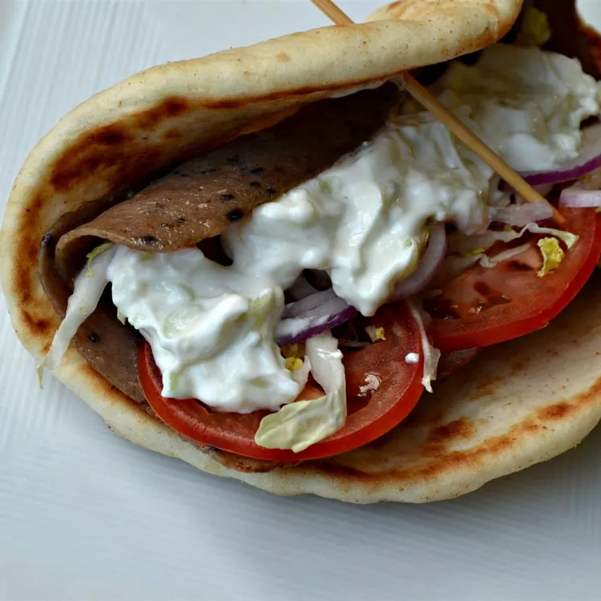

Tzatziki

Description
Yummy Greek tzatziki sauce.
It looka the yummy.
Yum.
Ingredients
- 2 English cucumbers
- 2 (16 ounce) containers sour cream
- 1 (16 ounce) container Greek yogurt
- 2 tablespoons minced garlic
- 1 tablespoon extra virgin olive oil
Steps
- Peel cucumbers, then grate into a colander. Squeeze out excess water.
- Mix together sour cream, yogurt, garlic, and olive oil in a large bowl. Stir in cucumbers. Chill at least 30 minutes and up to 2 hours before serving.